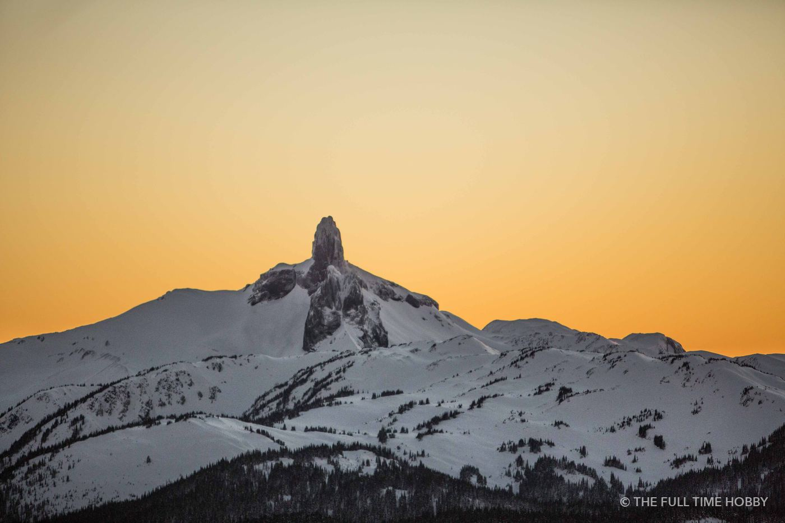
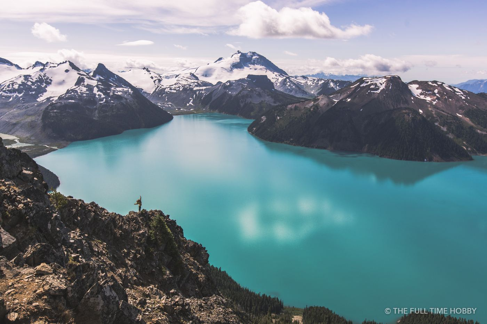
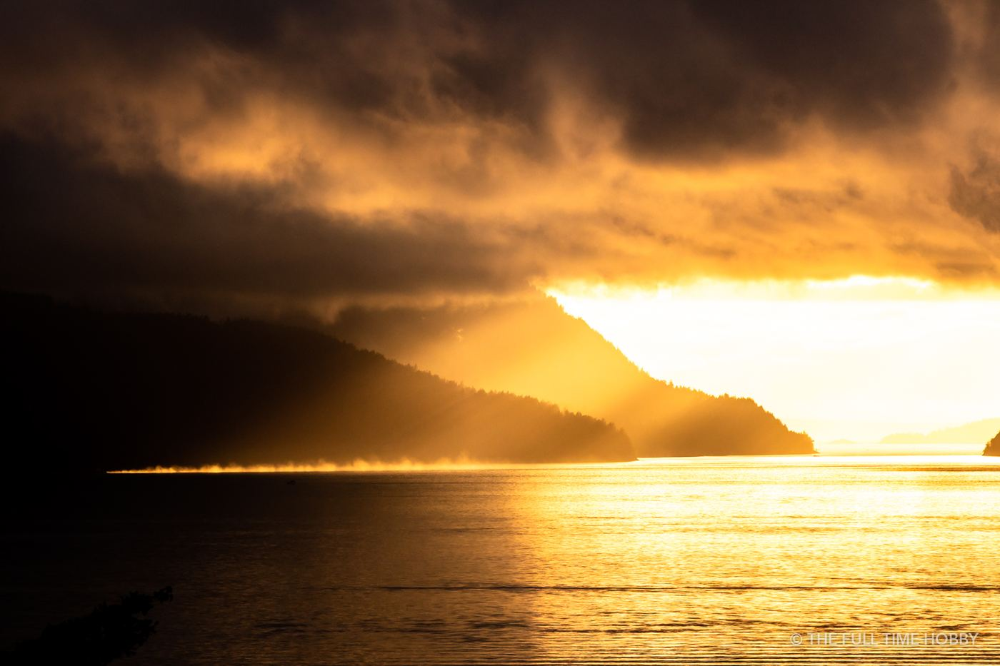
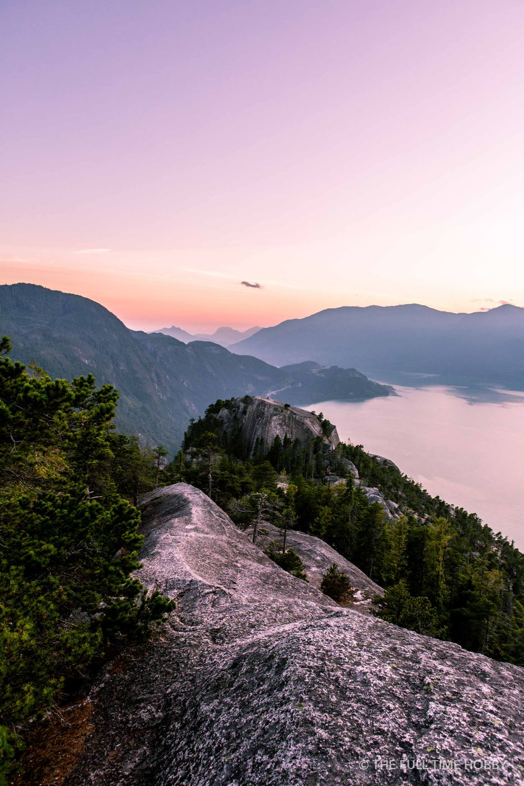
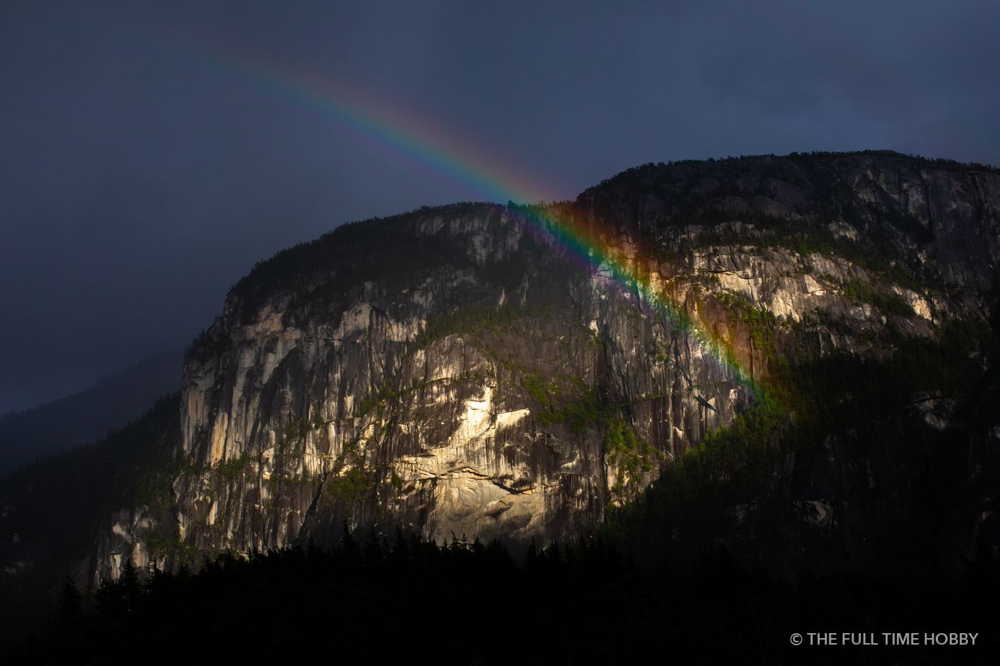
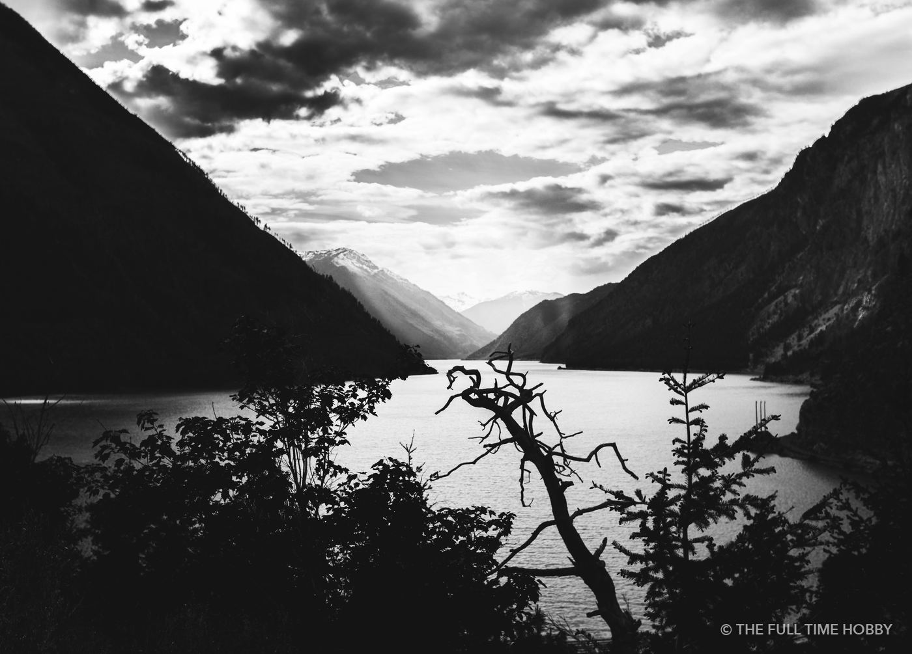

Black Tusk and Garibaldi Provincial Park
Black Tusk is the most recognizable peak in the Sea to Sky, a dark volcanic spire that shows up from all over Garibaldi Provincial Park. It’s at its best in low light, when the rest of the range turns pink and the Tusk stays a sharp silhouette.

Garibaldi Lake gets its colour from glacial flour, fine rock dust suspended in the meltwater. The turquoise is strongest on bright days, which is the opposite of most landscape advice. A polarizer cuts the glare on the surface and deepens the colour.
The Garibaldi trails are popular, and BC Parks has required free day-use passes for the busiest trailheads in peak season. Check their site before you go.
Howe Sound
Howe Sound is a fjord, and it photographs best when the weather is doing something. Low winter sun turns the whole fjord gold, and fall and winter mornings often bring mist sitting on the water with the mountains fading in layers behind.

- A telephoto lens (70–200mm or longer) stacks the ridgelines and makes the layers more dramatic.
- Blue hour, just before sunrise or after sunset, gives the water and mountains a cool, even tone.
- Use the pullouts along the Sea to Sky Highway, and never stop on the shoulder.

Squamish granite in stormy weather
Rainy days aren’t write-offs. When showers clear in the late afternoon, low sun under the clouds can throw rainbows across the granite domes around Squamish. Keep a camera in the car on unsettled days.

Lillooet Lake and Pemberton
Past Pemberton the valleys open up and the weather is often drier than on the coast. Lillooet Lake, framed by steep peaks, works well in black and white when the light is flat. Look for shapes and contrast instead of colour.

Planning tips
- Check the mountain forecast, not just the town forecast. The alpine can be clear when Squamish is socked in, and the reverse.
- Alpenglow happens just after sunset. Stay put for 15 minutes after the sun goes down.
- Bring layers and the ten essentials for anything above the valley floor.
Need a longer lens or a second body for a trip up the corridor? Rent camera gear in Squamish and pick it up on your way.